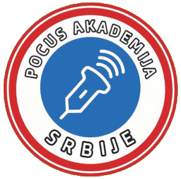
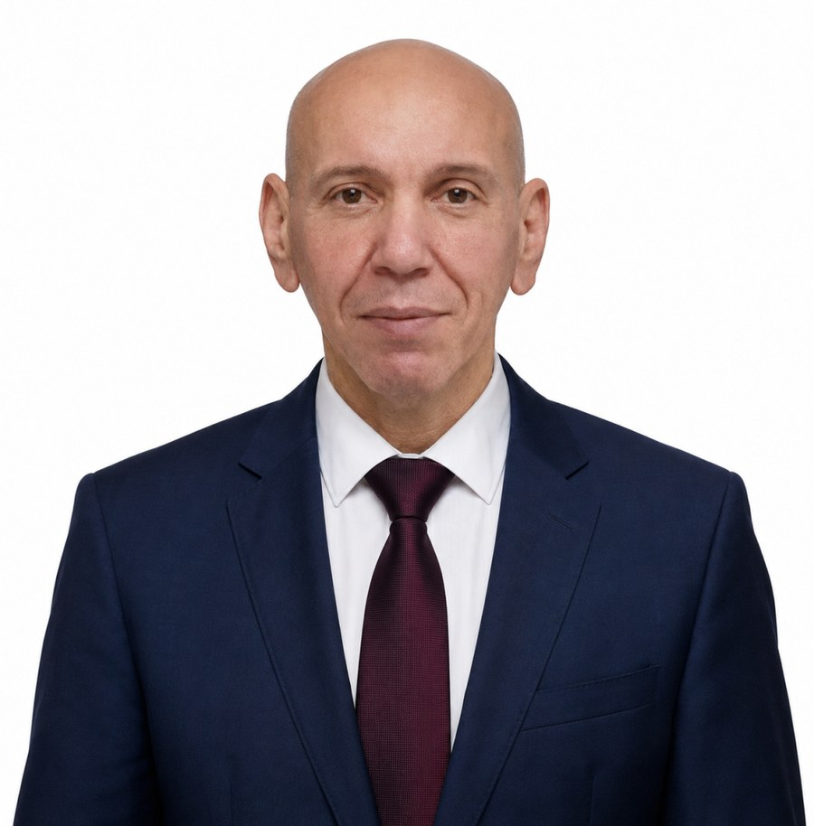
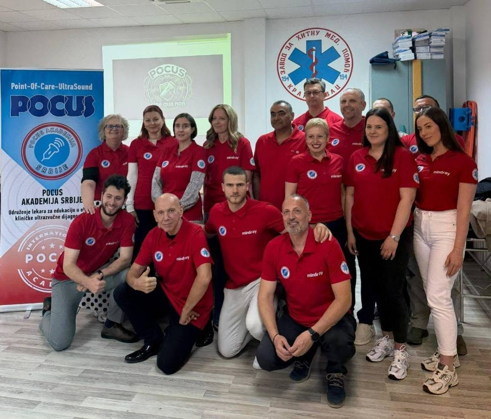

The founding school of the International POCUS Academy. Ultrasound education for physicians across Serbia since 2019.
The POCUS Academy of Serbia was officially founded at its constituent assembly in 2023, but has existed informally since 2019 as a continuation of the Serbian Association for Medical Imaging (UMIS), established in 2014 by Prof. Dr Željko Marković. The Academy is registered as a non-profit professional association of physicians dedicated to promoting ultrasound diagnostics and organizing medical education.

Born in 1961, he graduated from the Faculty of Medicine, University of Belgrade, in 1995. A specialist in general and family medicine since 2005, he was awarded the title of Primarius in 2014. Practicing echosonography since 2001, he is certified in Serbia, Austria and the USA, and has served as an instructor and lecturer at Serbia's national ultrasound schools since 2018. His work has been recognized by the Serbian Medical Chamber and the American POCUS Certification Academy.
Around twenty Academy instructors provide regular hands-on training of colleagues in healthcare institutions across Serbia. Every May the Academy hosts its flagship annual conference — POCUS Diagnostics Days — along with an autumn–winter workshop in Požarevac.
Training covers the core protocols, focused examinations of individual regions and organs, and the special PROBE program — a complete course in ultrasound diagnostics for physicians in general practice, internal medicine and beyond.

Spec. ordinacija "ID MEDICA"
Ul. Petnaestog oktobra 14/2
12000 Požarevac, Serbia